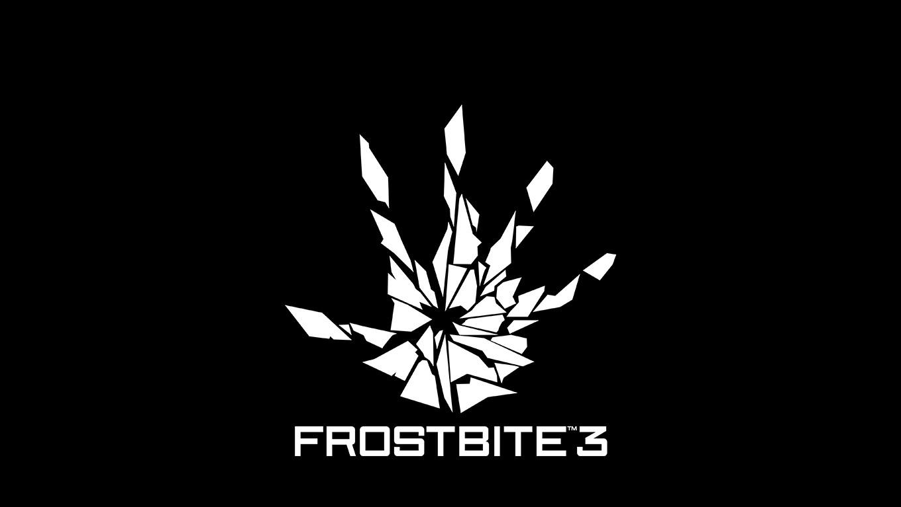

Vydavatel
EA DICE
Zajímavost
- První hra běžící na Frostbite Battlefield: Bad Company (2008 již
let)
- Poslední verze je Frostbite 3.0 který vyšel roku 2013 s krou battlefield 4. Sice od té doby
nevyšla
nová verze, ale téměř s kažkou hrou se přidá nějaká menší novinka
- Hru běžící na enginu Frostbite zatím nevidal nikdo jiný než studia z EA
Vlastnosti
- Napsáno v C++
- Platformy
- Minecrosoft Windows
- Playstation 3 a 4
- Xbox 360 a One
- Licence Proprietární
- Velký důraz na ničení okolí s nejnovější funkcí Levolution, která ulehčuje ničení okolního světa
- Silný důraz je kladen i na audio a od verze Frostbite 2.0 je vybaven také HDR Audiem
Hry
- Battlefield: Bad Company a novější
- Mirror's Edge Catalyst
- FIFA 17 a novjější
- Need for Speed: The Run, Rivals a Payback
- Mass Effect: Andromeda
- Star Wars Battlefront a II
- Dragon Age: Inquisition
- Plants vs. Zombies: Garden Warfare a 2
- Anthem
Ukázka vývoje enginu